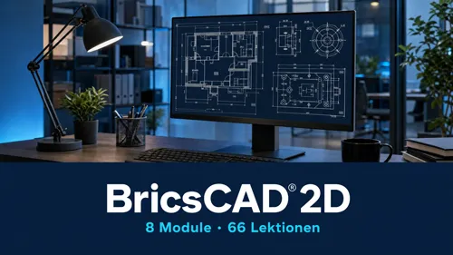
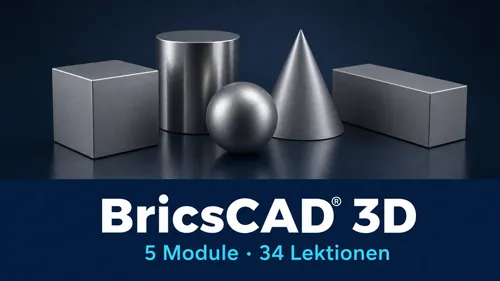
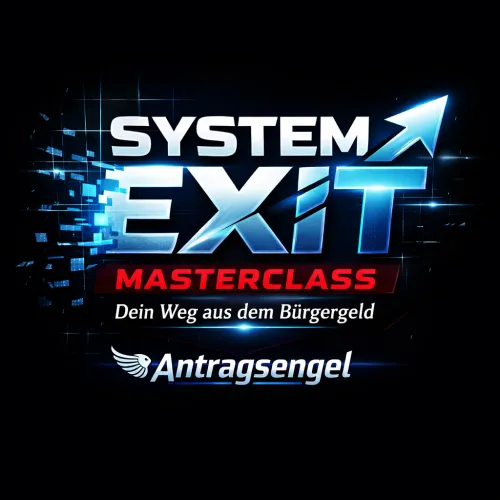

CAD-Video Selection
Produktprofil · Marktplatz-Daten 2026-10-14 · Verkaufsseiten-Recherche 2026-10-14 · Kategorien: Education
- CAD-Video Selection ist ein/e Mitgliederbereich & Videokurs in Education, vertrieben über den Digistore24-Marktplatz von Anbieter CADDeutschland, gelistet seit 2026-07-01.
- Listenpreis $1322.98 (single payment) — Checkout, Auslieferung und Rückerstattungen laufen über Digistore24 selbst, nicht über den Anbieter.
- Käuferschutz: keine standardisierte Garantie-Formulierung gefunden — Rückerstattungsbedingungen vor der Zahlung auf der offiziellen Seite prüfen.
Interesse an CAD-Video Selection? Aktueller Preis, Boni und Garantiebedingungen finden Sie auf der offiziellen Seite des Anbieters:
Offizielle Verkaufsseite ansehen
Affiliate-Link (Werbung) — wir verdienen ggf. eine Provision, ohne Mehrkosten für Sie.
Marktplatz-Daten
| Produkttyp | Mitgliederbereich & Videokurs |
|---|---|
| Preis | $1322.98 (Single payment) |
| Garantie/Rückgabe | Laut Verkaufsseite des Anbieters — vor dem Kauf auf der offiziellen Seite prüfen |
| Anbieter | CADDeutschland (gelistet seit 2026-07-01) |
Marktplatz-Beschreibung des Anbieters
Für Einsteiger und Profis Unser Video-Portal richtet sich an alle Anwender, die keine oder wenig Erfahrung mit BricsCAD haben, oder die Ihre Kenntnisse auffrischen möchten. Mit dem Video-Portal erarbeiten Sie sich nicht nur eine solide CAD-Basis, sondern finden auch viele Tipps und Tricks um den CAD-Alltag noch effizienter zu gestalten. Entscheiden Sie selbst, wann Sie welches Kapitel sehen, wiederholen und vertiefen wollen. Lernen Sie innerhalb kürzester Zeit die wichtigsten BricsCAD 2D und 3D, BIM, Mechanical und 2D+3D Parametrik Funktionen kennen und nutzen. Mit dem Kauf des Paketes CAD-Video Selection erhalten Sie vollen Zugriff auf die Kurse BricsCAD 2D und 3D, BIM, Mechanical und 2D+3D Parametrik unter CAD-Video.de für 1 Jahr und können die Videos in diesem Zeitraum anschauen, sooft und wann immer Sie wollen. Machen Sie diese Video-Plattform zu Ihrem „BricsCAD-Personal-Trainer“, der Ihnen 24 Stunden täglich und 7 Tage die Woche zur Seite steht.
Von der Verkaufsseite des Anbieters
Seitentitel: CAD-Video Selection - Digistore24
Abschnitts-Überschriften
- Für Einsteiger und Profis
- Für Einsteiger und Profis
- Für Einsteiger und Profis
Einstiegstext
Unser Video-Portal richtet sich an alle Anwender, die keine oder wenig Erfahrung mit BricsCAD haben, oder die Ihre Kenntnisse auffrischen möchten. Mit dem Video-Portal erarbeiten Sie sich nicht nur eine solide CAD-Basis, sondern finden auch viele Tipps und Tricks um den CAD-Alltag noch effizienter zu gestalten. Entscheiden Sie selbst, wann Sie welches Kapitel sehen, wiederholen und vertiefen wollen.
Mit dem Kauf des Paketes CAD-Video Selection erhalten Sie vollen Zugriff auf die Kurse BricsCAD 2D und 3D, BIM, Mechanical und 2D+3D Parametrik unter CAD-Video.de für 1 Jahr und können die Videos in diesem Zeitraum anschauen, sooft und wann immer Sie wollen.
Machen Sie diese Video-Plattform zu Ihrem „BricsCAD-Personal-Trainer“, der Ihnen 24 Stunden täglich und 7 Tage die Woche zur Seite steht.
Unser Video-Portal richtet sich an alle Anwender, die keine oder wenig Erfahrung mit BricsCAD haben, oder die Ihre Kenntnisse auffrischen möchten. Mit dem Video-Portal erarbeiten Sie sich nicht nur eine solide CAD-Basis, sondern finden auch viele Tipps und Tricks um den CAD-Alltag noch effizienter zu gestalten. Entscheiden Sie selbst, wann Sie welches Kapitel sehen, wiederholen und vertiefen wollen.
Preisangaben auf der Seite: $10
Recherche-Methode: rohes HTML · 848 Wörter · Qualität: rich · recherchiert am 2026-10-14. Vollständige Recherche-Datei (MD) ↗
Wie Produkte dieser Art geliefert werden
Allgemeiner Hinweis zu diesem Produkttyp (keine anbieterspezifische Anleitung): Videokurse laufen über einen Mitgliederbereich: nach dem Checkout erhalten Sie Zugangsdaten per E-Mail und können die Lektionen in Ihrem eigenen Tempo streamen. Für die genaue Anwendung von CAD-Video Selection sind die offizielle Verkaufsseite und die enthaltenen Materialien maßgeblich.
Gut zu wissen
- Hoher Preis: $1322.98 ist eine erhebliche Ausgabe — prüfen Sie, ob es einen Zahlungsplan gibt, und vergleichen Sie zuerst die günstigeren Alternativen der Kategorie.
- Keine Garantie-Formulierung in unserer Recherche gefunden — bestätigen Sie das Rückgabefenster auf der offiziellen Seite, bevor Sie kaufen.
Was ist CAD-Video Selection?
CAD-Video Selection ist ein/e mitgliederbereich & videokurs in der Kategorie Bildung des Digistore24-Marktplatzes, veröffentlicht von Anbieter CADDeutschland und im Verkauf seit 2026-07-01. Der Anbieter beschreibt es so: "Für Einsteiger und Profis Unser Video-Portal richtet sich an alle Anwender, die keine oder wenig Erfahrung mit BricsCAD haben, oder die Ihre Kenntnisse auffrischen möchten. Mit dem Video-Portal erarbeiten Sie sich nicht nur eine solide CAD-Basis, sondern finde" (Marktplatz-Beschreibung des Anbieters, leicht gekürzt).
CAD-Video Selection Preis: was Sie zahlen
Der Marktplatz listet CAD-Video Selection zum $1322.98 Preis (single payment). Digistore24 fügt im Checkout die gesetzliche Steuer Ihres Landes hinzu — dort sehen Sie den Endbetrag vor der Zahlung. Die Verkaufsseite selbst nennt: $10 (Anbieteraussagen — verbindlich ist der Checkout-Betrag). Eine separate Plattformgebühr gibt es nicht; Anbieter können eigene Upsells nach dem Checkout anbieten.
CAD-Video Selection Rückerstattung und Geld-zurück-Garantie
Wir haben keine standardisierte Garantie-Formulierung auf der Verkaufsseite gefunden. Rückerstattungen für Digistore24-Käufe laufen über die Plattform: Antrag über den Support-Link in Ihrer Bestell-E-Mail, innerhalb des Garantiezeitfensters, das im Checkout angezeigt wird. Praktischer Rat: Entscheiden Sie innerhalb des Fensters — wenn das Produkt unter den Erwartungen bleibt, erstatten lassen statt irren lassen.
Mechanik im Detail: So funktionieren Digistore24-Rückerstattungen.
Für wen ist CAD-Video Selection geeignet?
Basierend auf der Bildung-Einordnung und der single payment-Abrechnung richtet sich CAD-Video Selection an Käufer, die bildung-Lösungen suchen und ein Budget für einen Premium-Kauf eingeplant haben. Der ehrliche Test ist nicht die Kategorie, sondern Ihre eigene Situation: Werden Sie es realistisch innerhalb des Garantiefensters nutzen? Wenn ja, ist der Preis eine Investition; wenn nein, ist er Ballast — unabhängig von der Qualität.
Ist CAD-Video Selection seriös? Was Sie vor dem Kauf prüfen
Wir bewerten keine Seriosität — das kann niemand, ohne das Produkt zu nutzen. Prüfbare Punkte, alle auf dieser Seite: die Marktplatz-Historie des Anbieters (im Verkauf seit 2026-07-01), die wörtlichen Verkaufsseiten-Auszüge unten (gekennzeichnet als Anbieteraussagen — deren Werbung, nicht unsere Empfehlung), die Garantiebedingungen im Checkout und die Auslieferungsart. Vorsichtsignale bei jedem Angebot: Countdown-Dringlichkeit gepaart mit vagen Rückerstattungsbedingungen, Testimonials ohne Datum und Anbieterseiten, die den Preis bis zum Checkout verstecken.
Wie kommen Sie nach dem Kauf an CAD-Video Selection?
Der Checkout läuft über Digistore24. Nach der Zahlung: Videokurse laufen über einen Mitgliederbereich: nach dem Checkout erhalten Sie Zugangsdaten per E-Mail und können die Lektionen in Ihrem eigenen Tempo streamen. Bewahren Sie die Bestell-E-Mail auf — sie ist Ihr Schlüssel zum/d zur mitgliederbereich & videokurs, zu Rückerstattungsanträgen und zum Digistore24-Käufersupport.
CAD-Video Selection Erfahrungen: so recherchieren Sie richtig
Die meisten „Erfahrungsberichte" zu Marktplatz-Produkten sind Affiliate-Inhalte — einschließlich Seiten wie dieser, die an Käufen mitverdienen. Behandeln Sie jeden Bericht (auch unseren) als Ausgangspunkt und prüfen Sie gegen Primärquellen: die Verkaufsseite des Anbieters, die Digistore24-Rückerstattungsrichtlinie und — für bildung — unabhängige Communities außerhalb des Affiliate-Ökosystems. Auf dieser Seite sind die Verkaufsseiten-Auszüge unten wörtlich zitiert, damit Sie die Aussagen des Anbieters bewerten können, ohne wegzuklicken.
Wie Sie CAD-Video Selection sicher kaufen
- Öffnen Sie die offizielle Verkaufsseite und lesen Sie das vollständige Angebot.
- Bestätigen Sie Endpreis und Garantiezeitfenster auf der Digistore24-Kassenseite — sie ist bindend, kein Vergleichsportal.
- Zahlen Sie innerhalb des Digistore24-Checkouts (niemals per Überweisung oder Off-Platform-Links).
- Speichern Sie die Bestellbestätigung; notieren Sie die Rückerstattungsfrist im Kalender.
- Prüfen Sie zügig. Der Digistore24-Käufersupport hilft, wenn der Anbieter nicht reagiert.
Vollständiges Recherche-Archiv für dieses Produkt (Markdown: kompletter Marktplatz-Datensatz + wörtliche Verkaufsseiten-Auszüge): CAD-Video Selection — Datenarchiv (.md).
- Listenpreis & Abrechnung — Quelle: offizielle Digistore24-Marktplatz-API, Stand 2026-10-14. Maßgeblich für den aktuellen Preis ist immer die Kassenseite.
- Verkaufsseiten-Zitate — Quelle: https://www.checkout-ds24.com/product/538322, abgerufen 2026-10-14 (Methode: rohes HTML). Verify: offizielle Seite öffnen.
- Garantie / Rückgabe — vom Anbieter festgelegt; vor dem Kauf auf der Verkaufsseite bestätigen.
- Nicht von uns geprüft: Produktqualität, Ergebnisse, Testimonials — kein Praxistest für dieses Listing durchgeführt.
Häufige Fragen zu CAD-Video Selection
Antworten aus dem Marktplatz-Snapshot (2026-10-14) und der Verkaufsseiten-Recherche (2026-10-14); Anbieteraussagen sind inline gekennzeichnet.
Was ist CAD-Video Selection?
CAD-Video Selection ist ein Angebot des Typs „Mitgliederbereich & Videokurs" im Digistore24-Marktplatz, Anbieter: CADDeutschland, gelistet seit 2026-07-01. Eingepflegt unter Bildung. Digistore24 wickelt Checkout, Lieferung und Rückgaben ab.
Wie viel kostet CAD-Video Selection?
Der Digistore24-Marktplatz listet es für $1322.98 (single payment). Preise legt der Anbieter fest und können sich ändern — der Marktplatz-Eintrag oben zeigt den Schnappschuss; die offizielle Verkaufsseite zeigt den aktuellen Preis.
Gibt es eine Geld-zurück-Garantie für CAD-Video Selection?
Unsere Verkaufsseiten-Recherche hat keine explizite Garantie-Formulierung gefunden. Viele Digistore24-Produkte bieten 60 Tage Geld-zurück, aber das legt jeder Anbieter selbst fest — bestätigen Sie es auf der offiziellen Verkaufsseite, bevor Sie kaufen.
Ist CAD-Video Selection seriös?
Wir bewerten keine Seriosität — wir veröffentlichen überprüfbare Zahlen: Anbieter CADDeutschland (gelistet seit 2026-07-01), mit der vollständigen Verkaufsseiten-Recherche archiviert auf dieser Seite (Anbieteraussagen als solche gekennzeichnet). Lesen Sie unsere 6-Punkte-Bewertungsmethode und entscheiden Sie anhand der Zahlen — oder diskutieren Sie CAD-Video Selection auf GitHub.
Gibt es Alternativen zu CAD-Video Selection?
Ja — die nächstähnlichen Angebote derselben Kategorie sind Schul-Paket gegen Mobbing, MATRIXPRINZIP von Coach Cecil, Online-Ausbildung zum Pferdegestützten Coach. Details in der Vergleichstabelle oben bzw. auf der Alternativen-Seite mit allen Marktplatz-Zahlen.
Wo kann ich CAD-Video Selection sicher kaufen?
Nur über die offizielle Verkaufsseite, die auf dieser Seite verlinkt ist (Checkout und Rückgaben laufen über Digistore24). Prüfen Sie dort Preis und Garantie vor der Bestellung. Der Link ist ein Affiliate-Link — der Kauf unterstützt diese Website ohne Mehrkosten für Sie.
Wie erhalte ich CAD-Video Selection nach der Zahlung?
Der Checkout läuft über Digistore24: Nach der Zahlung erhalten Sie Ihren Zugang oder Download per E-Mail und in Ihrem Digistore24-Kundenkonto. Lieferdetails für diesen Produkttyp: Videokurse laufen über einen Mitgliederbereich: nach dem Checkout erhalten Sie Zugangsdaten per E-Mail und können die Lektionen in Ihrem eigenen Tempo streamen. Bei Problemen kann der Digistore24-Käufersupport Ihre Bestellung wiederherstellen.
Alle 50 Käuferfragen zu Bildung — das komplette Kategorie-FAQ.
CAD-Video Selection auf Reddit diskutieren
In Community-Threads vergleichen echte Käufer Erfahrungen. Wir verlinken Communities, keine einzelnen Posts — Threads verschwinden, Subreddits bleiben:
- Reddit-Suche nach „CAD-Video Selection" — Live-Ergebnisse, von uns nicht beeinflusst.
- Top-„Erfahrungs"-Treffer dieses Jahr — selbst nach Aktualität filtern.
Passendes auf Amazon.de
Physische Produkte und Zubehör, die häufig zusammen mit CAD-Video Selection gekauft werden:
- Education auf Amazon.de — Top-Ergebnisse, Amazon-Ranking.
- Bestseller: Education — live Liste von Amazon, von uns nicht kuratiert.
Werbung: Als Amazon-Partner verdient DigistorePicks DE an qualifizierten Käufen (Partner-tag adminstorede-21). Amazon setzt eigene Preise und Provisionen (niedrige einstellige Prozente — weit unter den 30–75% der Digistore24-Anbieter). Amazon ist ein Convenience-Angebot für Sachprodukte, kein Ersatz für das digitale Produkt oben.
Ähnliche Angebote in Bildung

ZUGRIFF FÜR ALLE! Jede Person, die ein Arbeitsverhältnis mit Ihnen als Schulgemeinde hat sowie eine E-Mail-Adresse von Ihrer Schule, hat die Zufriffsberechtigun

MATRIXPRINZIP – High-Ticket-Produkt mit bis zu 820,56€ Provision pro Verkauf! Mindset, emotionale Intelligenz und finanzielle Intelligenz – genau die Fähigkeite

Eine bislang noch einzigartige Ausbildung auf dem Markt für eine interessante Zielgruppe! Das Pferdegestützte Coaching auf Basis systemischer Grundlagen erlerne

Für die Teilnehmer ist die Gesamt- oder Teil-Ausbildungen möglich. Empfehle das einzigartige Produkt & verdiene passives Einkommen durch unser effektives Ay
Weitere Angebote von CADDeutschland
Gesamtes Sortiment: CADDeutschland Anbieter-Hub — alle Listings mit Marktplatz-Daten.
Für Einsteiger und Profis Unser Video-Portal richtet sich an alle Anwender, die keine oder wenig Erfahrung mit BricsCAD haben, oder die Ihre Kenntnisse auffrisc
Für Einsteiger und Profis Unser Video-Portal richtet sich an alle Anwender, die keine oder wenig Erfahrung mit BricsCAD haben, oder die Ihre Kenntnisse auffrisc

Für Einsteiger und Profis Unser Video-Portal richtet sich an alle Anwender, die keine oder wenig Erfahrung mit BricsCAD haben, oder die Ihre Kenntnisse auffrisc

Für Einsteiger und Profis Unser Video-Portal richtet sich an alle Anwender, die keine oder wenig Erfahrung mit BricsCAD haben, oder die Ihre Kenntnisse auffrisc
Optionen vergleichen? CAD-Video Selection im Vergleich mit den nächsten Alternativen — Marktplatz-Zahlen direkt nebeneinander.
Wie schneidet CAD-Video Selection ab? (Marktplatz-Zahlen)
| Produkt | Typ | Preis | Provision | Checkout-CR* | Storno* | Verdienst/Verkauf |
|---|---|---|---|---|---|---|
| CAD-Video Selection | Mitgliederbereich & Videokurs | $1322.98 | 20 % | — | — | $264.60 |
| Schul-Paket gegen Mobbing | Mitgliederbereich & Videokurs | $4221.36 | 33 % | — | — | $1393.05 |
| MATRIXPRINZIP von Coach Cecil | Mitgliederbereich & Videokurs | $1054.61 | 50 % | 1 % | 2.71 % | $920.57 |
| Online-Ausbildung zum Pferdegestützten Coach | Mitgliederbereich & Videokurs | $3835.88 | 20 % | — | — | $767.17 |
| Ayurveda-Komplett-Ausbildung | Mitgliederbereich & Videokurs | $2369.23 | 30 % | — | — | $710.77 |
Entscheidungsfaktoren für Käufer
- Funktion: Checkout-Konversion und Anbieter-Bilanz vergleichen — beide in der Tabelle oben.
- Passung: Typ und Voraussetzungen (Lieferformat, Vorkenntnisse) in jedem Profil prüfen.
- Wartung: Die Stornoquote ist das Kaufreue-Signal; Nutzungsbedingungen stehen auf den offiziellen Seiten.
- After-Sales: Garantie-Formulierung und Support — vor dem Kauf auf offiziellen Seiten verifizieren.
* Anbieter-seitige Statistiken; abhängig von der Traffic-Qualität, keine Prognose. Vollständiger Kontext: Alternativen-Seite zu CAD-Video Selection.
Ähnliche Preislage in Bildung

Die RS Piano-Akademie bietet umfassende und interaktive Klavierkurse, die vom Anfänger- bis zum Fortgeschrittenenniveau reichen. Diese Kurse wurden entwickelt,

═══════════════════════════════════════════════════════════════════ SYSTEM-EXIT MASTERCLASS WERDE AFFILIATE-PARTNER & VERDIENE 500€+ PRO SALE ══════════════
High-Ticket Bestseller: Das Marketing-Komplettsystem – 10 PDF-Guides für 360° Erfolg Einmal verkaufen – 500 € Provision verdienen Bonus: 100% Steuerlich absetzb

Verdiene 50% Verkaufsprovision mit dem Biz Builder Bootcamp – Dein perfekter Einstieg ins Affiliate Marketing! Das Biz Builder Bootcamp ist nicht nur ein Kurs –
Ähnliche Suchanfragen
Wo Sie es sich ansehen können
Wo Sie es sich ansehen können
Aktuelle Preise, Garantie und Boni finden Sie auf der offiziellen Verkaufsseite:
Offizielle Verkaufsseite ansehen
Das ist ein Affiliate-Link (Werbung) — kaufen Sie darüber, verdienen wir ggf. eine Provision, ohne Mehrkosten für Sie.
Quellen & weiterführende Informationen
- Offizielle Verkaufsseite (aktueller Preis, Garantie, Boni): www.checkout-ds24.com/product/538322 (Affiliate-Link)
- Öffentliche Digistore24-Produktseite: checkout-ds24.com/product/538322
- Vollständige Recherche-Datei (Markdown, versioniert): content/products/57340-cad-video-selection.md
- Affiliate-Supportseite des Anbieters: cad-video.de/affiliate
- Marktplatz-Kategorie: Bildung
Wie wir Produkte wie CAD-Video Selection bewerten
Sechs Prüfungen, ausschließlich mit offiziellen Marktplatz-Zahlen. Die vollständige Bewertungsmethode lesen · unsere Recherche-Standards & Kennzeichnung.
Fragen oder eigene Erfahrungen mit CAD-Video Selection?
Praxis-Tests veröffentlichen wir erst, nachdem wir ein Produkt selbst gekauft haben — aber Ihre Erfahrung hilft anderen Lesern: Diskussion zu CAD-Video Selection auf GitHub starten/verfolgen. Falsche Zahl gefunden? Korrektur melden — jede Seite zeigt ihre Datenstände, Korrekturen gelten für die ganze Website.